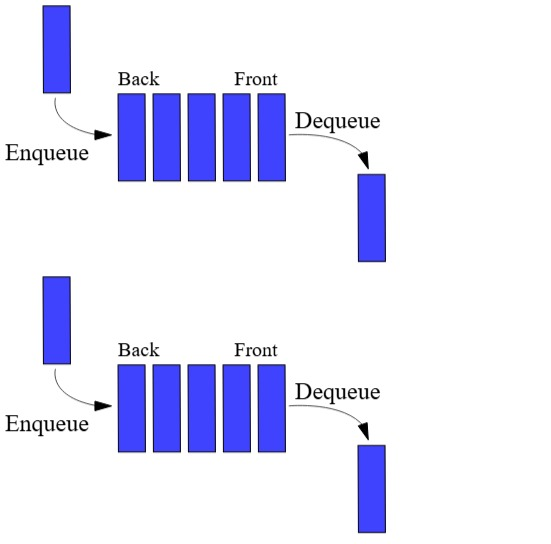

Queue (Antrean)
Queue adalah struktur data FIFO (First In First Out). Data yang pertama masuk akan menjadi yang pertama keluar.
Ilustrasi

Implementasi Python
from collections import deque
queue = deque()
# Enqueue (tambah data)
queue.append(10)
queue.append(20)
queue.append(30)
print("Queue:", queue)
# Dequeue (hapus data pertama)
queue.popleft()
print("Setelah dequeue:", queue)
Penjelasan :
Antrian kasir: Masuk: A → B → C Keluar: A dulu